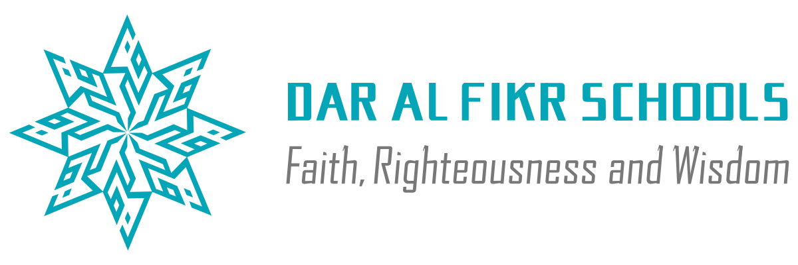

Wadi al-Amanah
Valley of Trust · Grade 4 Math Ecosystem
0
doors of 91
0
pages of 16
0%
water returned
🔊
Sound: ON
Reveal all names
Walk the caravan
+1 Door (Demo)
Bab al-Rih
YOU ENTER HERE
Bi'r Umm al-Ma'
THE MOTHER-WELL
Souq al-Mizan
?
SAND STILL MOVING
N
The Valley of Trust · Dar Al Fikr
BEYOND THE LAST RIDGE · NOT TO SCALE
The Sijill · sixteen pages
not yet opened
opened
page sealed